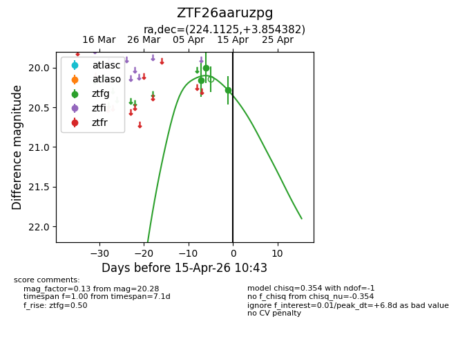
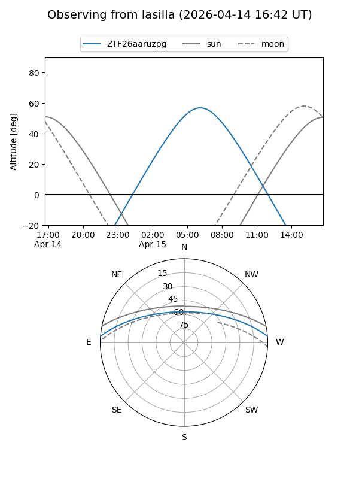
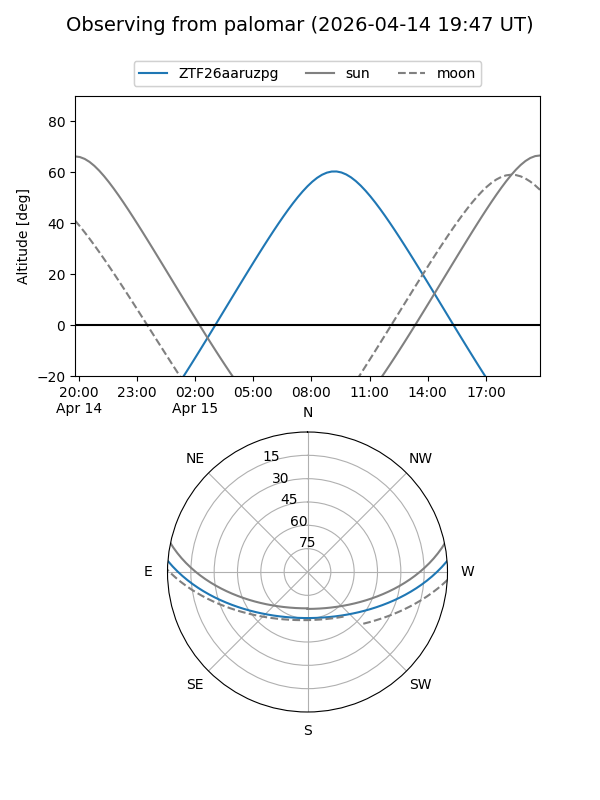
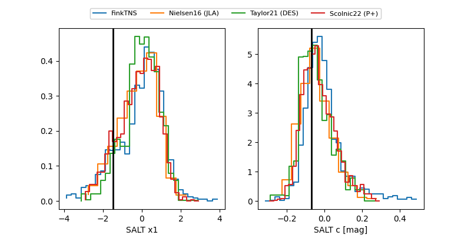

ZTF26aaruzpg
Target ZTF26aaruzpg at 2026-04-15 10:56
Aliases and brokers:
FINK: link
Lasair: link
ALeRCE: link
alt names
ZTF26aaruzpg (ztf,fink_ztf)
Coordinates:
equatorial (ra, dec) = 224.1125,+3.85438
equatorial (HMS+DMS) = 14:56:27.00,+03:51:15.78
galactic (l, b) = (0.4847,+52.16382)
Flags:
Photometry:
last ztfg=20.28
3 ztfg detections
Lightcurve

Visibility


Additional plots
